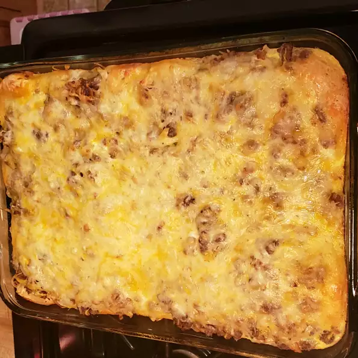

Father's Day Casserole

Description
My daughter and I created this for Father's Day. It is easy to make in a
short amount of time.
Ingredients
- 1(16 ounce) package bulk pork sausage
- 3 cups frozen hash brown potatoes, thawed
- 1/4 cup milk, or as needed
- 1 can refrigerated buttermilk biscuit dough
- 1/2 shredded Mexican cheese blend
- 5 eggs
- Preheat an oven to 350 degrees F (175 degrees C).
Grease a 9x13-inch baking dish.
- Heat a large skillet over medium-high heat and stir in the sausage.
Cook and stir until the sausage is crumbly, evenly browned, and no
longer pink, about 5 minutes. Drain and discard any excess grease.
Stir in the hash brown potatoes, cooking and stirring until potatoes
are browned, about 5 minutes more.
- Line the bottom of the prepared baking dish with a layer of buttermilk
biscuits, splitting the biscuits in half to completely cover the dish.
Spread the sausage and hash brown mixture evenly over the biscuits,
and sprinkle the Mexican cheese on top. Whisk together the eggs and
milk in a bowl, and pour over the cheese.
- Bake in the preheated oven until the eggs set, about 25 minutes.